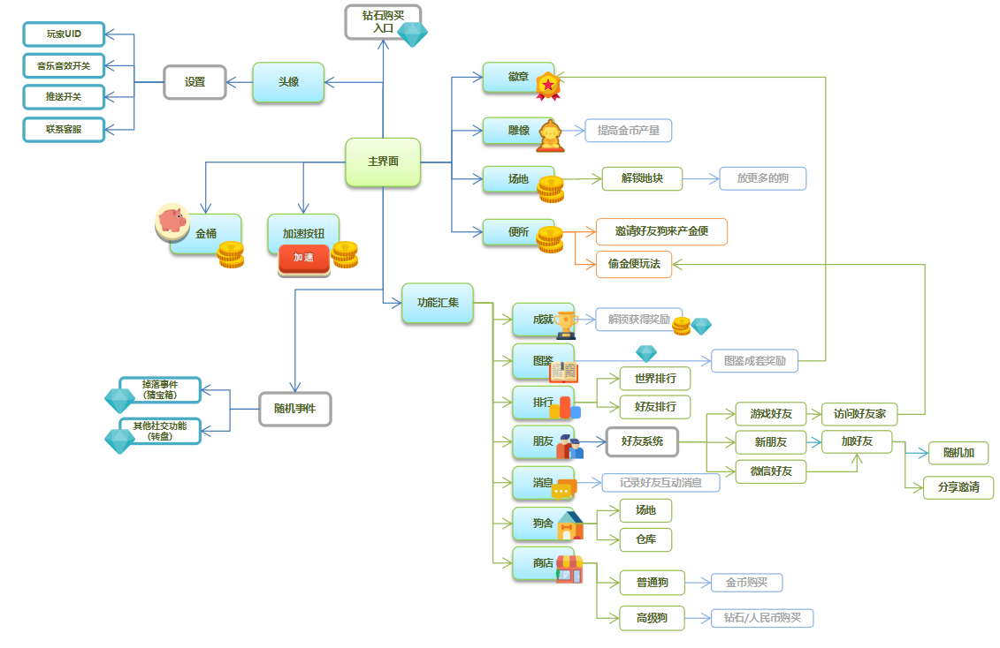
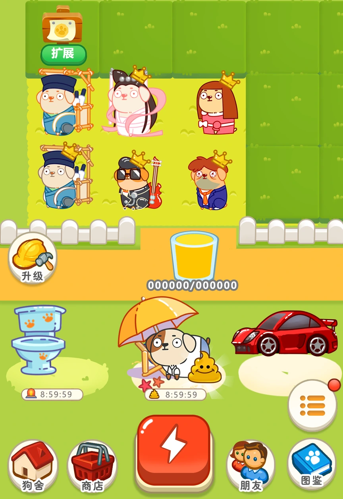
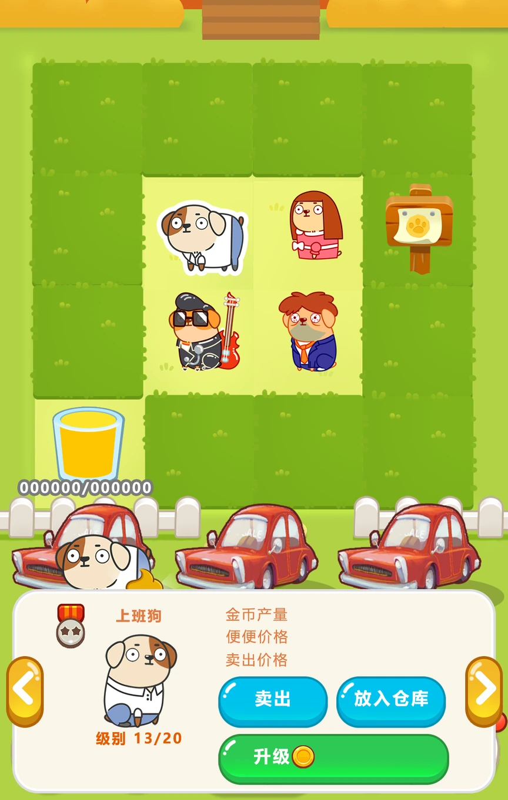
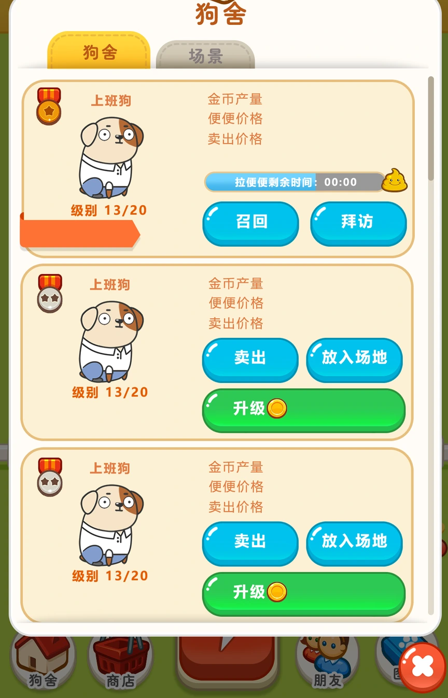
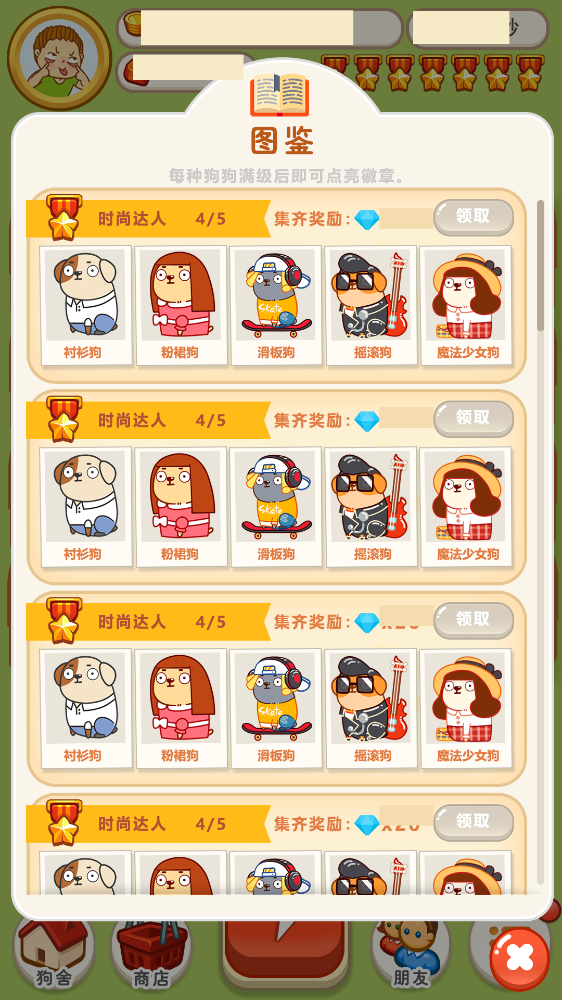
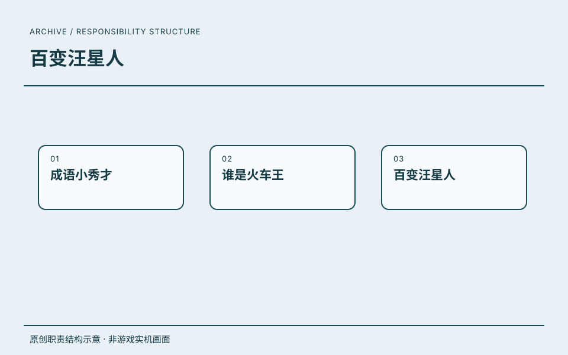
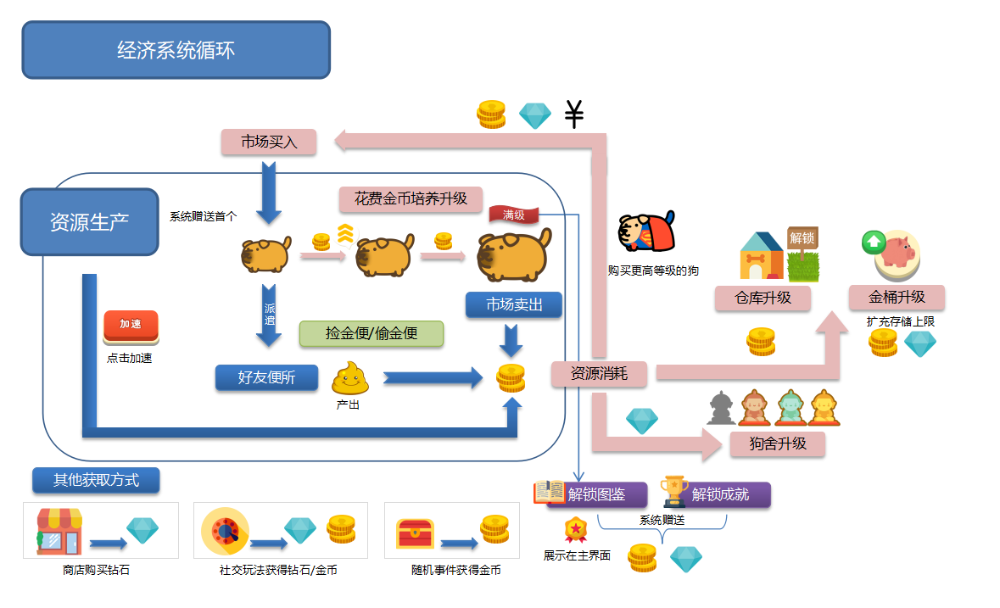
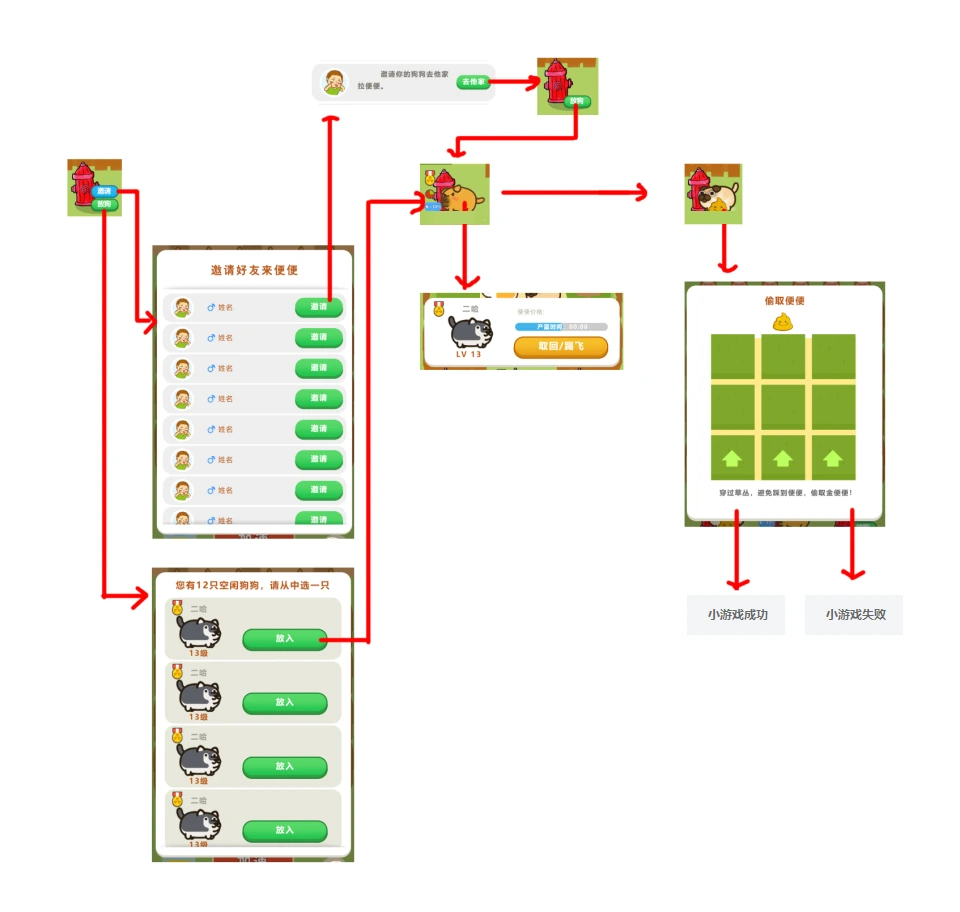
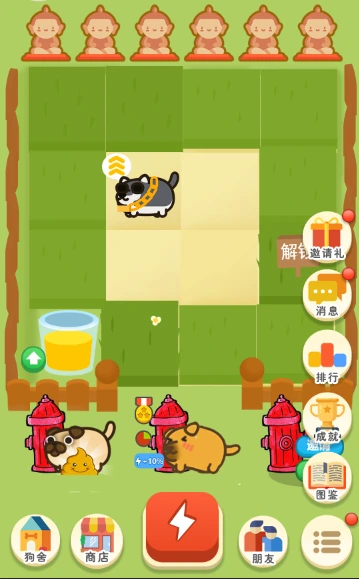
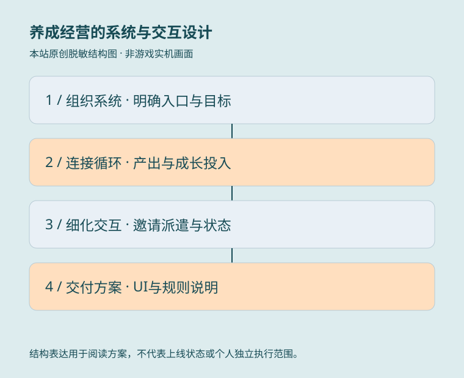

从经营目标拆解系统结构

设计问题
怎样把放置产出、养成和收集串进同一个经营场景？
文档产出与来源
立项案第 5.2 节梳理系统关系。《图鉴功能策划案》补充了单只点亮与套组进度的反馈规则。
关键方案与工作价值
- 以主场景连接资源收取、培养、社交和收集。图鉴与成就为养成提供阶段目标。
- 单只狗满级时提示点亮图鉴。玩家可点击领取单只奖励，点亮后同步更新套组进度。
- 集齐整套后播放完成动画并开放领取。领完后以完成标记替换奖励显示。
在页面内阅读从经营目标拆解系统结构大图

06 / 项目卡带档案 · PROJECT 03
以主策划身份参与；Goose 署名立项资料展示养成经营的系统结构、资源循环、社交操作和 UI/UE 交付，历史方案与最终版本分开阅读。
任职角色沿用履历记录；具体贡献按项目资料区分，共同职责不逐项归为单个项目的独立成果。
MY WORK / DESIGN VALUE
用户最新确认 Goose 资料对应百变汪星人；立项案保留《超级铲屎官》历史名称与本人策划署名，不推定全部功能独立作者、完整更名时间线或最终上线范围。
职责依据本人履历与确认；原图补充设计证据，经营结果另行说明来源与口径。
以经营场地为起点，查看犬只状态、管理在场与库存，再用图鉴追踪收集进度。 图为团队历史界面设计稿的局部摘录，部分示例信息已裁去或遮盖。

场地、金桶和底部操作集中在同一画面，先收取，再培养或扩地。
test/MainUI2.png
点选场景中的狗，可查看等级，并进行升级、卖出或移入仓库。
test/MainUI_dogInfo.png
派遣中的狗可召回或拜访，库内的狗可放入场地。
test/MainUI_inventory.png
同组狗狗集中陈列，收集进度和奖励领取状态并排显示。
test/MainUI_handbook.png
以主策划身份参与；Goose 署名立项资料展示养成经营的系统结构、资源循环、社交操作和 UI/UE 交付，历史方案与最终版本分开阅读。
以主策划身份参与《成语小秀才》、《谁是火车王》、《百变汪星人》。
这里保留任职角色与项目记录。
《百变汪星人》列于这段任职经历中。
任职、角色与职责依据本人履历及确认。图示是本站原创的职责结构表达。
DESIGN JOURNAL / 方案摘要
读背景、职责、方案与可证实产出。
SYSTEM DESIGN / ECONOMY / UI·UE
从系统关系到资源循环，再到界面状态与操作流程，展示策划方案如何落到可讨论的交付内容。
按用户最新确认，Goose 资料对应《百变汪星人》，不再归入《谁是火车王》。立项原文标题为《超级铲屎官》，正文称其基于《疯狂鹅场》后续开发；保留历史名称，不把方案标题直接认作最终上线名称。立项案页眉署名“策划：吴天昊”；封面另有笔名，未据此推定身份。图中美术由团队承担，历史方案不代表全部已上线。
怎样把放置产出、养成和收集串进同一个经营场景？
立项案第 5.2 节梳理系统关系。《图鉴功能策划案》补充了单只点亮与套组进度的反馈规则。


怎样让放置收益有持续的投入方向，并让容量与培养形成不同的成长目标？
立项案第 5.3 节画出生产、收取、培养、购入与升级的循环。《主界面功能策划案》补充了金桶与地块的操作规则。


邀请与派遣涉及多名玩家，如何说明可操作条件、等待状态和结果反馈？
立项案第 6.3 节画出邀请、选狗、派遣、等待和收取。《好友功能策划案》补充申请状态，《主界面功能策划案》补充从好友场景返回的规则。

如何缩短日常操作路径，同时让升级和收集功能易于找到？
立项更新说明记录了常用入口下移及金桶、加速按钮的调整。《主界面功能策划案》《背包功能策划案》和《成就功能策划案》进一步细化入口和状态。
《超级铲屎官》立项策划案_20180629.doc 的封面日期为 2018/6/14，文件名记录 20180629 版本。另核对主界面、背包、好友、成就和图鉴功能文档。立项案写在场／库存分页，独立背包案写狗窝按格存放，历史美术稿显示狗舍／场景分页。各图文分别呈现对应版本的设计。

狗场经营需要连接持续产出、培养、容量扩展与社交操作，让成长目标可理解、可执行。
主策划岗位沿用履历，立项案页眉支持策划产出；其他功能文档作项目范围补充，不认定全部个人独立撰写。
通过系统结构和资源循环组织功能关系，再细化邀请派遣、库存切换、主界面高频入口及成就状态。
交付系统与经济结构图、社交流程和界面方案；历史版本与团队美术分别说明，不作为最终上线或增长证明。
摘要依据：用户确认的 Goose 项目资料；《超级铲屎官》立项案页眉署名“策划：吴天昊”，另核对功能文档。按用户最新确认归入百变汪星人，保留原文历史名称，不推定完整更名时间线；完整原件、登记材料和配置不公开。
放大流程图 ↗阅读文档摘要 ↗可滚动阅读大图；也可打开流程图缩放。下方文字提供同等内容。